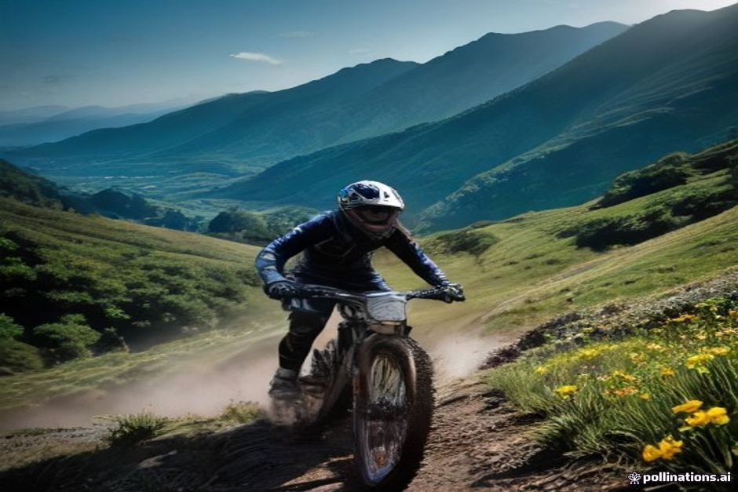
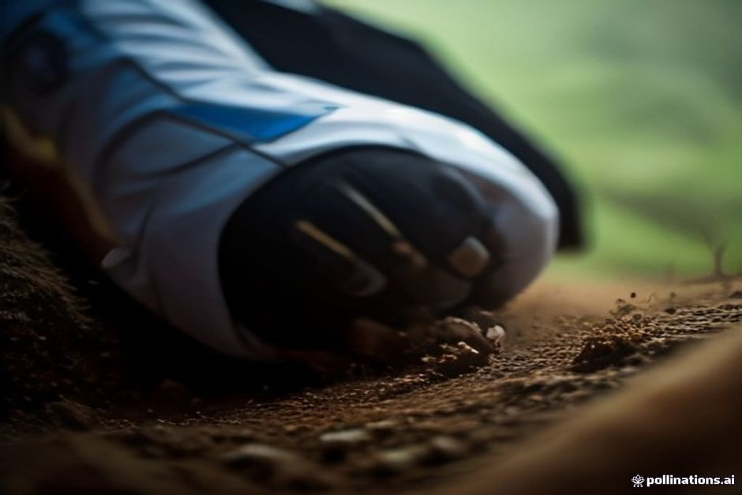

Avete letto «Trans Madeira 2026» e non siete sicuri se sia un evento per professionisti, una gara aperta a tutti o qualcosa che può complicare il vostro viaggio? Qui trovate le risposte in breve: è una gara enduro in MTB a tappe, dura sei giorni, ha più di 30 prove speciali ed è molto impegnativa. Per chi è a Madeira come semplice visitatore, di solito cambia poco.
Trans Madeira MTB in breve
La Trans Madeira è una gara a tappe di enduro in mountain bike, cronometrata, che si corre in sei giorni sui sentieri di montagna e di costa dell'isola. Il nome completo è Trans Madeira powered by Scott.
- Formato: più di 30 prove speciali in sei giorni.
- Distanza: circa 250 km tra sentieri e trasferimenti in sella.
- Tappe giornaliere: da 35 a 60 km, trasferimenti compresi.
- Partecipanti: professionisti enduro sponsorizzati e amatori molto allenati, da tutta Europa.
Non è una gara di sola discesa. Tra una prova cronometrata e l'altra i biker pedalano per lunghi tratti, quindi la resistenza su sei giorni consecutivi pesa quasi quanto la tecnica.

Quando si corre la Trans Madeira 2026
L'edizione autunnale 2026 è in programma dal 28 settembre al 3 ottobre 2026. È la seconda dell'anno: la prima si è tenuta a maggio, in versione estiva.
La data di fine settembre ha una ragione pratica. Il caldo più forte dell'estate si è già attenuato sui sentieri esposti in quota, e di solito il terreno è ancora abbastanza asciutto da dare grip, prima dei mesi invernali più piovosi.
Se state leggendo dopo quelle date e pensate a una prossima edizione, controllate il calendario sul sito degli organizzatori: noi non abbiamo date certe da darvi.
Il percorso: dove si corre
I sei giorni toccano il nord, il sud, l'est e l'ovest dell'isola. Non c'è un unico anello ripetuto: le prove cambiano ambiente quasi ogni giorno, dalle creste vulcaniche asciutte alla laurisilva fitta e umida.
I dettagli di ogni tappa di solito restano riservati fino alla settimana di gara. Le edizioni passate hanno incluso tratti in quota sopra Funchal e Câmara de Lobos, sulla costa sud, e sentieri più isolati a nord e a ovest. Per il tracciato preciso dell'edizione in corso, la fonte è l'organizzazione.
Quanto è difficile? Può partecipare chiunque?
È una gara per chi ha già esperienza. La Trans Madeira sta all'estremo più duro delle gare enduro a tappe. I sentieri vanno dal single track scorrevole nel bosco a creste esposte e smosse, dove un errore ha conseguenze serie.
Ci vanno professionisti che la vivono come l'appuntamento della stagione e amatori che si sono preparati apposta per sei giorni di fila. Non è un evento da weekend rilassato e non è pensata per chi prova l'enduro per la prima volta.
Se volete pedalare a Madeira senza gareggiare, è un altro discorso: esistono uscite in MTB e passeggiate sulle levada, ma non sono la Trans Madeira e qui non ne parliamo nei dettagli.
Trans Madeira e Rali da Madeira: non sono la stessa cosa
È una confusione frequente, perché i due eventi condividono l'isola e il fatto di essere gare a tappe. In realtà sono molto diversi.
- Rali da Madeira: rally automobilistico su strade chiuse al traffico. Per le prove cronometrate blocca tratti della rete stradale pubblica, ed è di solito legato alla vendemmia d'autunno.
- Trans Madeira: gara di mountain bike su sentieri fuoristrada, per lo più sentieri da trekking e da bici. Sfiora appena le strade carrozzabili.
Per un turista la differenza è concreta: un rally può farvi cambiare strada, la gara in MTB quasi mai.

Si può vedere la gara da spettatori?
Non facilmente, e fa parte del suo carattere. Quasi tutte le prove corrono su sentieri stretti di montagna, lontani da parcheggi e punti panoramici. Non è uno sport da bordo strada come un rally.
Le possibilità realistiche sono due: la zona di partenza o di arrivo di una prova, oppure la copertura quotidiana degli organizzatori. Meglio non programmare una giornata intera piazzati su un sentiero con il caffè in mano.
La gara cambia la vostra vacanza a Madeira?
Quasi per niente. Resta sui sentieri e non sulla rete stradale pubblica, quindi incide poco sui tempi di spostamento, sugli orari dei traghetti e sulle attività lungo la costa. È un bel contrasto con le chiusure di strade di un rally.
Se siete sull'isola in quella settimana per altro, dalla passeggiata su una levada a una giornata in mare, i vostri piani non dovrebbero saltare. Per organizzare il resto del viaggio, la pagina con le informazioni pratiche è un buon punto di partenza.
Una settimana di gara, ma voi preferite il mare
Se sei giorni di enduro in quota non sono la vostra idea di vacanza, la stessa settimana funziona benissimo con il ritmo opposto: la costa sud dall'acqua. Le scogliere sono le stesse che i biker percorrono dall'alto, ma voi non avete bisogno di allenamento, di tecnica o di un numero sulla schiena.
Con Chifbay la barca è solo per il vostro gruppo, fino a 5 persone, con due skipper abilitati di Madeira. Si parte dalla Marina do Funchal, Pontile C. Il prezzo è per tutta la barca, mai a persona.
- Uscita di giorno, alle 10:00 o alle 14:00: 2 h 30 fino a Ribeira Brava per 500 EUR, oppure 3 h fino a Ponta do Sol per 600 EUR. Passa per Câmara de Lobos e Cabo Girão, con bagno e paddle board alla Fajã dos Padres. Trovate i dettagli nella pagina gita di mezza giornata alle calette.
- Uscita al tramonto, 1 h 15 prima del tramonto, tutto l'anno: 2 h fino a Cabo Girão per 400 EUR, oppure 2 h 30 fino a Ribeira Brava per 500 EUR. Senza sosta per il bagno. Vedete la pagina tramonto in barca privata.
A bordo ci sono cibo e bevande, un video a 360° Insta360, riprese con il drone (se il tempo lo permette) e foto scattate con una vera macchina fotografica. La cancellazione è gratuita fino a 24 ore prima della partenza.
Delfini, balene, luce dorata e bel tempo non possiamo promettervi: sono un regalo quando capitano. Per confrontare le uscite potete guardare le esperienze e la guida alle gite in barca a Madeira.
Un'isola, due modi molto diversi di passarci sei giorni.
Per chi corre, la Trans Madeira è un evento serio. Per tutti gli altri è soprattutto un rumore di fondo, e un promemoria di quanto territorio stia in un'isola così piccola, che la si attraversi su due ruote o la si guardi scorrere dalla barca.